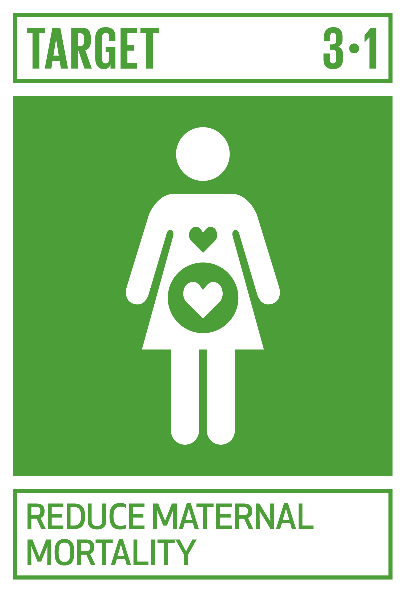
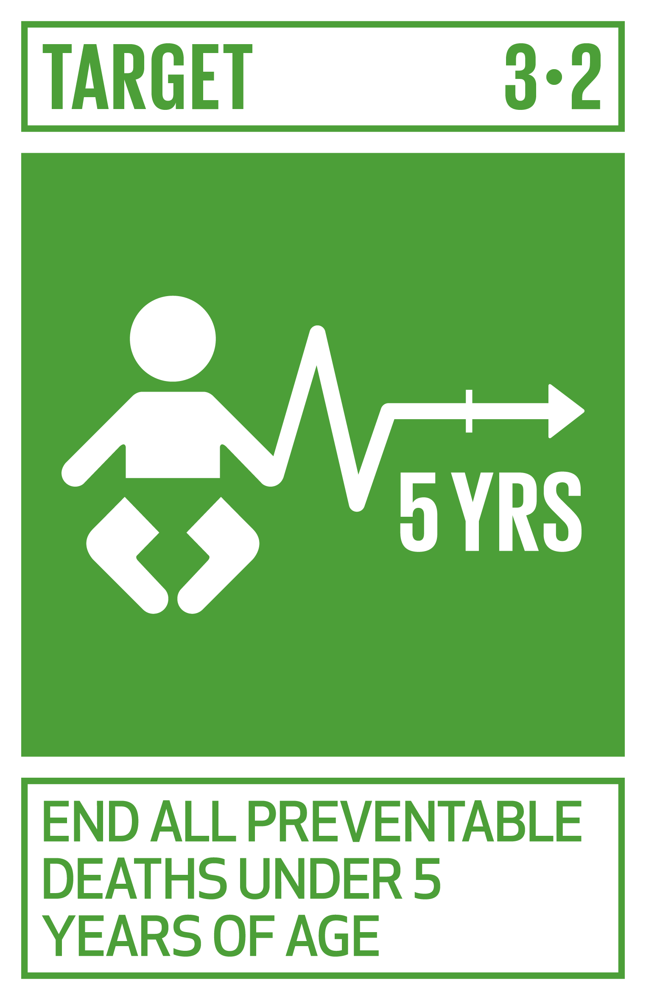
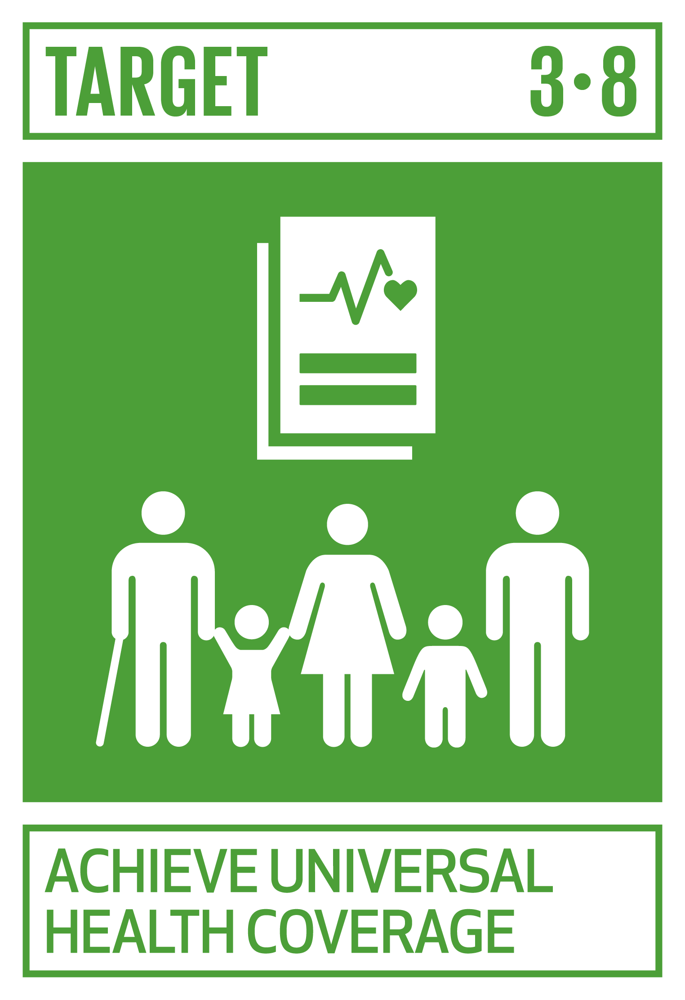
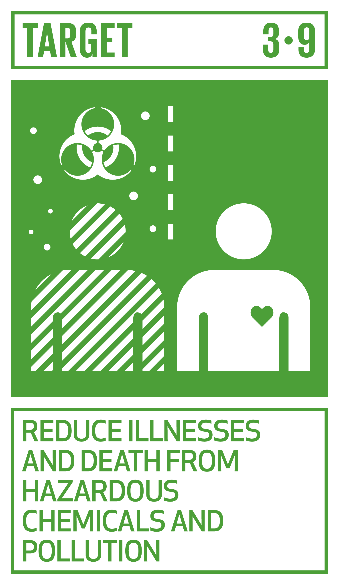
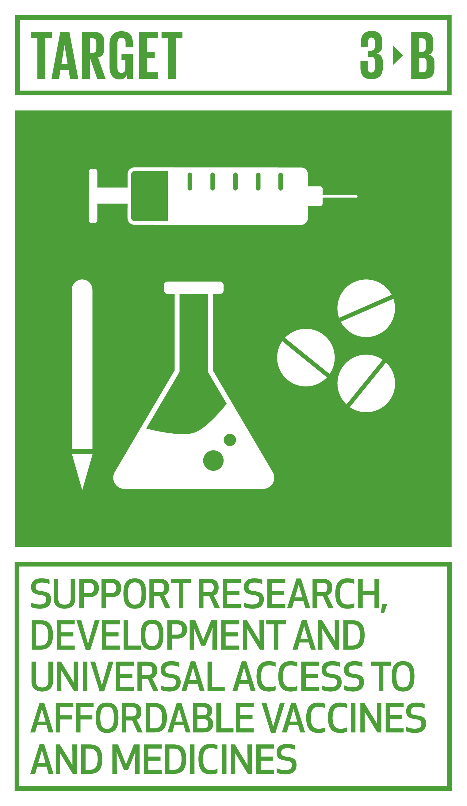
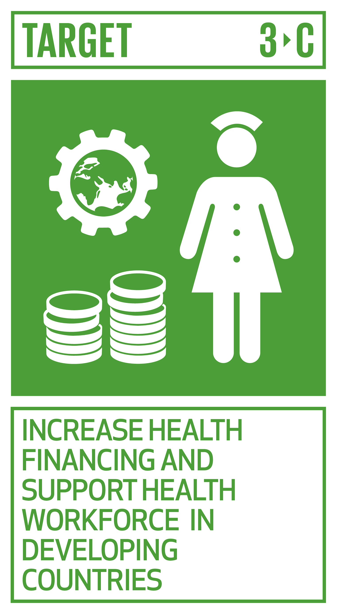

Good health allows us to live our lives to the fullest, participate in activities we enjoy, and be there for the people we care about.
Things to do

Find a Goal 3 charity you want to support. Any donation, big or small, can make a difference!!
Place yourself on the organ and tissue donors’ registry in your country.
Vaccinate yourself and your kids. Protecting your family from disease also aids public health.
Do not buy products tested on animals: Check the labels on the products you buy.
Donate your blood. Safe blood saves lives!
Targets

REDUCE MATERNAL MORTALITY
By 2030, reduce the global maternal mortality ratio to less than 70 per 100,000 live births.

END ALL PREVENTABLE DEATHS UNDER 5 YEARS OF AGE
By 2030, end preventable deaths of newborns and children under 5 years of age, with all countries aiming to reduce neonatal mortality to at least as low as 12 per 1,000 live births and under‑5 mortality to at least as low as 25 per 1,000 live births.
FIGHT COMMUNICABLE DISEASES
By 2030, end the epidemics of AIDS, tuberculosis, malaria and neglected tropical diseases and combat hepatitis, water-borne diseases and other communicable diseases.
REDUCE MORTALITY FROM NON-COMMUNICABLE DISEASES AND PROMOTE MENTAL HEALTH
By 2030, reduce by one third premature mortality from non-communicable diseases through prevention and treatment and promote mental health and well-being.
PREVENT AND TREAT SUBSTANCE ABUSE
Strengthen the prevention and treatment of substance abuse, including narcotic drug abuse and harmful use of alcoho
REDUCE ROAD INJURIES AND DEATHS
By 2020, halve the number of global deaths and injuries from road traffic accidents.
UNIVERSAL ACCESS TO SEXUAL AND REPRODUCTIVE CARE, FAMILY PLANNING AND EDUCATION
By 2030, ensure universal access to sexual and reproductive health-care services, including for family planning, information and education, and the integration of reproductive health into national strategies and programmes.

ACHIEVE UNIVERSAL HEALTH COVERAGE
Achieve universal health coverage, including financial risk protection, access to quality essential health-care services and access to safe, effective, quality and affordable essential medicines and vaccines for all.

REDUCE ILLNESSES AND DEATH FROM HAZARDOUS CHEMICALS AND POLLUTION
By 2030, substantially reduce the number of deaths and illnesses from hazardous chemicals and air, water and soil pollution and contamination.

IMPLEMENT THE WHO FRAMEWORK CONVENTION ON TOBACCO CONTROL
Strengthen the implementation of the World Health Organization Framework Convention on Tobacco Control in all countries, as appropriate.

SUPPORT RESEARCH, DEVELOPMENT AND UNIVERSAL ACCESS TO AFFORDABLE VACCINES AND MEDICINES
Support the research and development of vaccines and medicines for the communicable and non-communicable diseases that primarily affect developing countries, provide access to affordable essential medicines and vaccines, in accordance with the Doha Declaration on the TRIPS Agreement and Public Health, which affirms the right of developing countries to use to the full the provisions in the Agreement on Trade-Related Aspects of Intellectual Property Rights regarding flexibilities to protect public health, and, in particular, provide access to medicines for all.

INCREASE HEALTH FINANCING AND SUPPORT HEALTH WORKFORCE IN DEVELOPING COUNTRIES
Substantially increase health financing and the recruitment, development, training and retention of the health workforce in developing countries, especially in least developed countries and small island developing States.